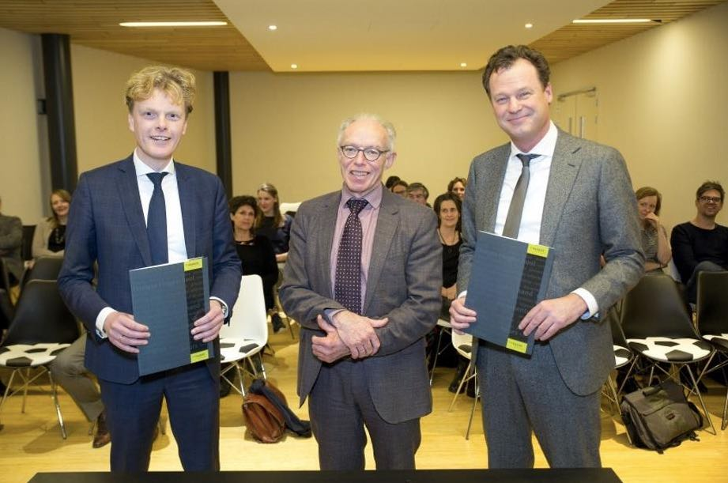

Nieuws
Home > Nieuwsbericht

25 januari 2018
Sophia Revalidatie en De Haagse Hogeschool halen banden aan
Lector Arend de Kloet (revalidatie) ontving op 19 maart uit
handen van de Haagse wethouder Karsten Klein De
Onbeperkt070-prijs. De Kloet is aanjager van het idee om een
Mobilitheek te openen, waar mensen met een beperking
mobiliteitshulpmiddelen kunnen lenen. Het initiatief ontving een
geldbedrag van €7.500 voor de uitvoering.
Son Burgers, directeur van de Faculteit voor Gezondheid, Voeding en
Sport van De Haagse: “Met het ondertekenen van deze overeenkomst
bevestigen we wat de jarenlange samenwerking voor onze beide
organisaties betekend heeft. De Haagse Hogeschool heeft de ambitie
om een regionaal en internationaal georiënteerde netwerkhogeschool
te zijn, die haar studenten opleidt tot wereldburgers. Deze
geïntensiveerde samenwerking helpt ons om die ambitie verder te
realiseren.” Willem Wiegersma, Raad van Bestuur van Sophia
Revalidatie: “Samenwerking tussen een hogeschool en een
revalidatiecentrum is in Nederland uniek en we zijn blij dat we dat
vandaag officieel bevestigen. Sophia Revalidatie wil met onderzoek
en innovatie op het gebied van eHealth waarde toevoegen aan de zorg
voor haar revalidatiepatiënten. Door deze samenwerking kunnen we
praktijkgericht onderzoek inzetten in ons living lab.”
Onderwijs
Het (zorg)onderwijs van De Haagse Hogeschool profiteert van de
expertise van Sophia Revalidatie, en van de vele mogelijkheden tot
het opdoen van zeer relevante praktijkervaring. Zo is in de
overeenkomst aandacht voor het faciliteren van stageplaatsen voor
studenten van de hogeschool binnen zowel een praktijkleerunit als in
het bestaande SmartLab. Ook spreken de twee partijen af gezamenlijk
onderwijscurricula te vernieuwen, onder andere bij de minor
(keuzemodule) Revalidatie.
Onderzoek
Onderzoek is voor de hogeschool, naast onderwijs, een belangrijke
tweede kerntaak. En ook Sophia Revalidatie heeft grote ambities op
het gebied van onderzoek, om zo bij te dragen aan de kwaliteit van
(evidence based) zorg, het verbeteren van behandelprogramma’s en de
ontwikkeling van de revalidatiegeneeskunde. Daarom wordt met de
nieuwe overeenkomst ook de onderzoekssamenwerking geborgd en verder
uitgebouwd. De twee partijen hebben samen al een lectoraat
Revalidatie, maar spreken daarnaast de intentie uit om meer met de
lectoraten Mantelzorg, Informatie, Technologie en Samenleving,
Oncologische zorg, Gezonde Leefstijl in een Stimulerende Omgeving,
Smart Sensor Systems en Technologie voor Gezondheid de verbinding te
zoeken. Met de bestuurlijke fusie tussen Sophia Revalidatie en
Rijnlands Revalidatie Centrum in oktober 2017 is niet alleen het
aantal praktijklocaties in de regio sterk toegenomen (samen hebben
zij 10 locaties in Den Haag, Delft, Leiden, Gouda, Zoetermeer, en
Alphen aan de Rijn), maar is ook de verbinding met wetenschappelijk
onderzoek verder verankerd met de bestaande samenwerking met het
LUMC. Het doel is om per 1 januari 2019 ook juridisch te fuseren, en
daarmee de beide organisaties in één nieuwe organisatie op te laten
gaan.
Innovatie
Op het gebied van innovatie spreken de twee partijen af om, naast
het genoemde onderzoek, ook gezamenlijk valorisatieprojecten uit te
voeren, waarbij waarde wordt gecreëerd uit (nieuwe) kennis,
bijvoorbeeld door het te vertalen in producten, diensten, processen
en nieuwe bedrijvigheid. Ook willen de twee partijen bestaande
living labs professionaliseren, en mogelijk nieuwe living labs
opzetten.
Professionaliseren Beroepspraktijk
De beide partijen willen een bijdrage leveren aan de verdere
professionalisering van de beroepspraktijk in de zorg. Met dit doel
voor ogen willen zij samen kennis ontwikkelen en delen, zodat een
continue professionaliseringsproces kan ontstaan. Uitgangspunt
hierbij is dat iedere activiteit een keten van verbeteringen tot
doel heeft, waarbinnen informeel en formeel leren elkaar aanvullen.
Door met elkaar (zowel beroepskrachten, docenten als studenten) een
learning community te vormen, waarin onderzocht wordt ‘wat werkt en
wat niet werkt’.